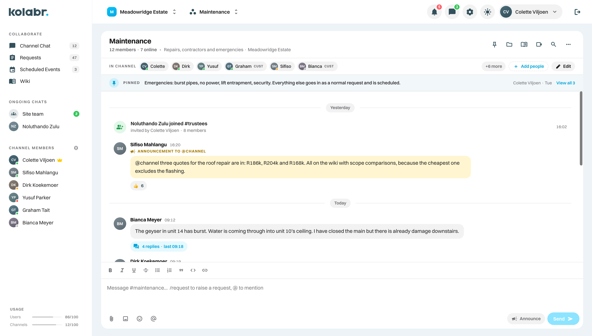
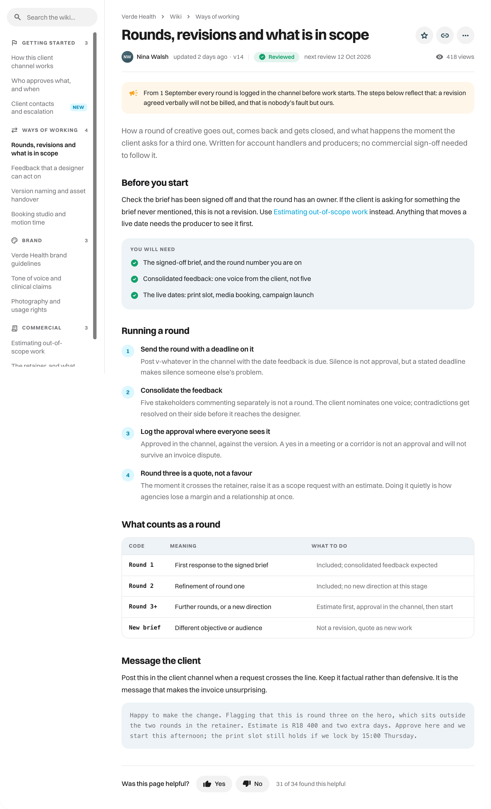

Notion is where teams keep what they know. The conversation about it happens in a different tool, and the promise made to a client during that conversation happens in a third. Kolabr puts all three in one channel: the discussion, the request with an owner and a deadline, and the article that explains how you handle it.
A page cannot tell you what was promised or who owes it. Kolabr gives every client a channel where the conversation produces numbered requests with owners and deadlines, and the wiki sits right beside them.
Pick a client and open a channel. There is nothing to design first, no database to model and no template to choose. By Friday the conversation, the open requests and the wiki are in one place.
A decision gets made in chat. It is written up on a page somewhere else. The client is told by email, and the thing they asked for in return is remembered by one person. Three tools, three records, and no single answer to what is outstanding. This is the ordinary shape of a week for most teams, and it is not a Notion problem so much as the cost of splitting work across products that do not know about each other.
In Kolabr a channel holds the conversation, the requests it produced and the wiki that explains them. The client is in it. When somebody asks what was agreed, the answer is a request with a number, a date and a name, and the article beside it says how that kind of work is handled.

Notion prices are list prices at the time of writing and are revised periodically, so check Notion’s own pricing page before you budget.
Kolabr has a wiki in every channel, and it is deliberately not a company encyclopaedia. It holds what the people in that channel need: how a revision is issued, what counts as urgent, who signs what. Guests read it without a licence, and because its scope is one relationship it stays short enough that somebody actually maintains it.
The failure mode of a general knowledge tool is not that it cannot hold the information. It is that six hundred pages accumulate, nobody can tell which are current, and the honest answer to a question becomes asking a colleague instead. A wiki bound to one channel resists that, because its readers are the same handful of people every day.

A blank workspace is freedom, and freedom is work. Kolabr trades it for a shape that is the same in every channel.
Nobody has to decide how your company models a client, a project or a task, and nobody has to maintain that decision after they leave.
Every channel has conversation, requests, wiki and events. A person who knows one client channel knows all of them, including a new starter in their first week.
What is open, overdue or unassigned across every channel is a view you open, not a set of linked databases somebody configures.
Tasks live inside a request and close with it. There is no separate board filling up with items nobody remembers agreeing to.
Worth knowing before you move, so nothing surprises you in month three.
No custom schemas, relations or formula fields. If you run something bespoke on a Notion database, keep it there.
The wiki is scoped to a channel on purpose. Long-form internal knowledge that belongs to everyone is better off where it already lives.
No public sites or forms. Kolabr is for the people in the channel, not for an audience.
Start with one client channel. Nothing has to be exported or restructured before you can see whether it works.
Notion is free to start, then $10 per member per month on Plus and $20 on Business with annual billing, rising to roughly $12 and $24 paid monthly, with Enterprise quoted. Kolabr is $9.99, $19.99 or $39.99 per user per month. Neither charges for guests.
The comparison is only fair once you add what sits beside Notion. Most teams running it also pay for a chat tool, and often a tracker on top, because a page cannot hold a conversation or run a clock. Kolabr includes chat, requests with response targets, a wiki, video calls and scheduled events in one number. What your plan buys is seats per channel: 30 on Starter, 100 on Pro, unlimited on Max, shared between your people and your guests.
The cost nobody puts on an invoice is the time spent building and repairing a workspace. Compare Kolabr plans.
Not really, and most teams do not ask it to. Notion carries comments on pages, but the running conversation of a working day happens somewhere else, which is why so many teams pay for Notion and a chat tool together. Kolabr puts the conversation, the request it produced and the article explaining it in one channel.
Yes, and people build good ones. The question is who maintains it. A Notion tracker is a database somebody designed, with views somebody configured and automations somebody keeps working, and it usually belongs to one person who eventually leaves. In Kolabr requests are part of the product: categories, owners, statuses, response targets and a cross-channel view exist the moment you create a channel.
What a guest joins. In Notion a guest is shared individual pages. In Kolabr a guest joins a channel, which means the conversation, the open requests, the wiki and the calendar for that relationship, all at once. You are not deciding page by page what a client is allowed to see.
No, and that is deliberate. Kolabr has one structure that every channel shares: conversation, requests, wiki, events. You cannot model anything you like, and in exchange nobody has to design it, document it or repair it a year later when the person who built it has gone.
Notion Plus at $10 per member per month is below Kolabr Starter, and Business at $20 sits between our tiers. The comparison changes when you count the chat tool you run alongside Notion, and the time spent building and maintaining the trackers that Kolabr includes.
Plenty of teams do. Notion keeps the long-form internal knowledge it is already full of, and Kolabr runs client channels, where the conversation, the requests and the wiki for that relationship belong together. The channel wiki is for what a client or a new starter needs, not a company encyclopaedia.
Fourteen days free on Max, every option included, no card. Open a channel for one client and see it working the same afternoon.
Notion is a trademark of Notion Labs, Inc. Kolabr is not affiliated with Notion Labs. Feature and price details were checked against public sources and change over time.